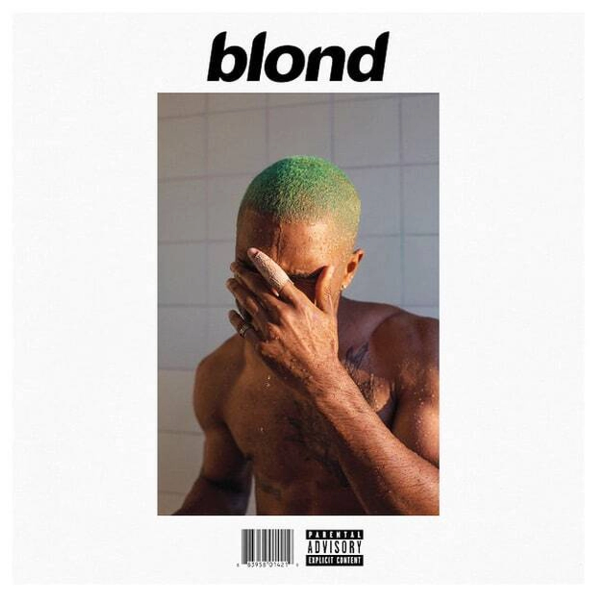

Frank Ocean
click here
故事 Blonde 專輯 Spotify
黑人歌手中的獨特“清流”
距離Frank Ocean上一張專輯《Blonde》之日已經過去了四年之久，在8月20日這一天，卻忽然有一群人不約而同地在社交媒體為這張專輯過起了“生日”，他們這麼多年依舊將這張作品反覆聆聽，視若珍寶。 在近日歐巴馬所公佈的2020年夏日歌單中，這位沉寂了多年的歌者之作品也名列其中。 出道至今只發了兩張正式專輯作品的Frank Ocean，雖然低產，但每一張專輯都是音樂圈有口皆碑的精品。在去年年底，美國樂評網站Pitchfork 評選的"2010年代最好的兩百張專輯"中他的兩張作品雙雙入榜，《channel ORANGE》位列第十，《Blonde》更是位列第一被奉為上個十年的經典，銷量也突破了一百萬，在口碑與商業上皆不容小覷。 作為一個融合了嘻哈、R&B和Funk多種元素的原創歌手，Frank Ocean卻與傳統印象中的黑人歌手與眾不同，彷彿像是一股“清流”，他的音樂中不見黑人音樂最愛提及的金錢、鬥爭、性等主題，反而充滿著以邊緣人群之角度所寫下的細膩情感與獨特思考
美國樂評人心中“2010年代最好的專輯”2012年，Frank Ocean以一張《channel ORANGE》一鳴驚人。
- 在《Thinkin Bout You》自然的夏日復古R&B氣息中，Frank演繹了一首流行度極高卻又充滿格調的細膩情歌，娓娓道來之間訴說著熱戀情人的心事
- 而《Super Rich Kids》在愚鈍的鋼琴鋪墊中，Frank以犀利、視角獨特的視角唱著“Super rich kids with nothing but fake friends”，唱的既是環繞在優渥富家子弟身邊的虛假情感，也是物欲橫流的資本世界中他的自身迷茫。
- 他遊走在R&B與Hip-Hop之間的獨特靈性，讓整張專輯聽起來如行雲流水般悅耳自然，既有黑人音樂的自由律動，又散發著白人音樂的典雅質感，用動聽的音樂包裹私人化的個人性感，給人留下了深刻印象，也成就了他獨一無二的藝術標籤。
- 而相隔四年發行，被無數人奉為經典的《Blonde》，可謂是前者的進化之作。
這個可以寫出悅耳流行旋律的男孩，卻似乎有意淡去專輯的悅耳度，利用一些碎片化的旋律，搭配簡單的一兩個配器，用克制的手法和精妙小巧的設計，營造了一個簡單卻又深遠的氛圍，而這一切的目的，是為了訴說那歌中更深邃，難以參透的細膩故事。
- 《Nikes》中簡單的合成器下穿透而出如“花栗鼠”般尖銳的音色，Frank的嗓音通過變聲器呈現出像未變聲的小男孩般的稚嫩音色，以戲謔而悲傷的語氣唱著種族問題、性和毒品，用音色營造的“年齡衝突感”，洋溢著一種矛盾的悲涼底色。
- 整首歌資訊量巨大，如同一首長詩般探討了許多社會現象，包括關於2012年無辜遭白人員警槍殺的17歲黑人Trayvon Martin的故事，因此即便是多年前的歌曲，在當下聽來亦能引發許多思考。
- 《Self Control》中Frank一反常態，以一把原聲吉他貫穿始終，嗓音也與往常絲滑、靈動的R&B唱腔有著明顯的差異，呈現出一種直接、破碎的狀態，在粗糙中卻迸發著飽滿的情感，講述著一個泳池邊的夏日時光，在愛面前遭遇冷落的他，失去自控落得一身狼狽的悲傷故事。吉他的旋律如夏夜晚風般如此輕盈，卻又無比荒涼。
- 而《Good Guy》更是專輯中一個特殊的存在。這首近乎demo半成品般的歌曲，用一分鐘和寥寥的幾個鍵盤音符伴奏，描繪著一個紐約的午夜，兩個人相親的故事，充滿畫面感的營造和在簡單的吟唱下奔湧的情感，讓這首粗糙的作品煥發獨特的動人光澤。 《Be Yourself》、《Facebook Story》幾首由他的朋友、朋友的母親所念的對白錄音、一些環境氛圍音樂構成的小間奏段落，在專輯中承接前後歌曲，營造出一種如電影般的場景感。 專輯中許多精巧的構思設計，讓《Blonde》異於普通的工業流水線音樂作品，呈現出細膩的質感，不落俗的旋律，耐人尋味的歌詞，讓整張專輯像一部起承轉合都精心打磨的作品，也讓其有著足夠的底蘊，支撐起“上個十年最佳專輯”這個沉甸甸的榮耀。
用最天真的口吻，去訴說著最殘忍的故事
在《Blonde》專輯的封面設計中，隱藏著一個Frank Ocean的巧思。雖然官方宣傳專輯名稱皆為《Blonde》，但封面上的標題文字卻寫著“blond”，缺了一個e，有人理解Blonde“是金髮女性，“blond”是金髮男性，而這樣在性別、性向上的模糊曖昧，也一直是Frank Ocean作品中的一個顯著標籤，也遊走在對大眾的“冒犯”與對自己的“保護”之間，讓作品引起了最廣泛的共鳴。
 
Spotify